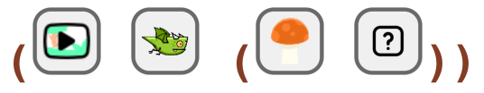

1 Sample Katas
1.1 Clicker Kata
read
Code a basic game with no customizations.
code
#lang clicker-farm-collect (start-forest)
In Ratchet:
1.2 Clicker Kata
read
Code a forest game where the cursor is a pointer.
code
#lang clicker-farm-collect (start-forest pointer)
In Ratchet:

1.3 Clicker Kata
read
Code a forest game where the cursor is a pointer collecting apples, and is avoiding rabbits, and can get special freezes.
code
#lang clicker-farm-collect (start-forest pointer (apple) (rabbit) (freeze))
In Ratchet:

1.4 Clicker Kata
read
Code a forest game where the cursor is a pointer collecting speed 2 yellow apples, and is avoiding speed 2 yellow rabbits, and can get special 2-point yellow freezes and 2-point orange slows.
code
#lang clicker-farm-collect (start-forest pointer ((apple yellow 2)) ((rabbit yellow 2)) ((freeze yellow 2) (slow orange 2)))
In Ratchet:
